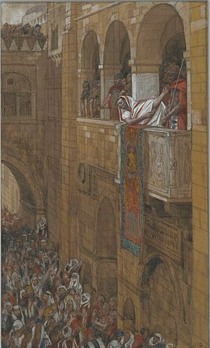
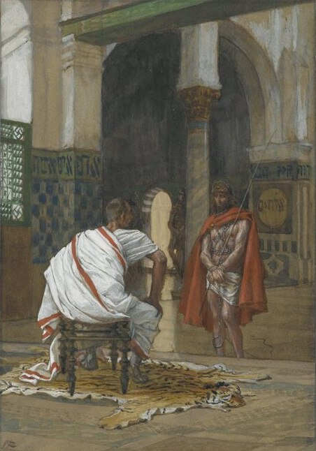
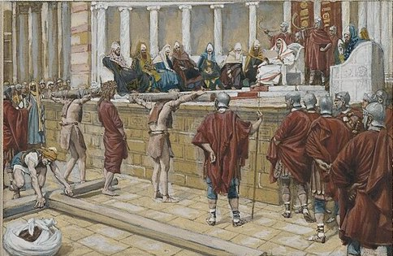
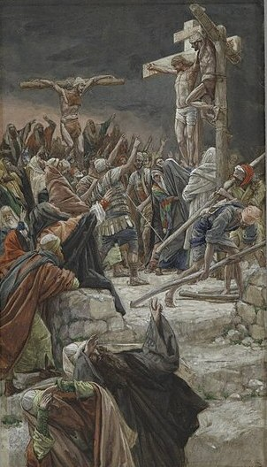

John 19
It is finished
Pilate finds no fault in him and hands him over anyway. Jesus carries his cross to Golgotha, dies in our place, and is laid in a garden tomb.
Things to watch for
Keep these questions in the back of your mind as we read. We'll come back to every one of them at the end.
- In our placeWhy did a man with no fault die on a cross?
- Who's in chargeWho really had the power in Pilate's hall?
- God's wordHow do we know the cross was God's plan and not an accident?
- FamilyWho did Jesus take care of while he was dying?
- FinishedWhat exactly did Jesus finish on the cross?
- CourageWhat brought two secret disciples out into the open?
Part one
Behold the man
Verses 1–16
The judge says “not guilty” three times, then sends him to the cross.
A crown made of the curse
John says it in a few plain words: Pilate “scourged him.” A Roman scourging was a brutal beating with a whip of leather straps. Some men didn't survive it.
“But he was wounded for our transgressions, he was bruised for our iniquities: the chastisement of our peace was upon him; and with his stripes we are healed.”
Isaiah 53:5
Then the soldiers mock him as a king. But look at the crown. When sin came into the world, God said the ground would bring forth “thorns also and thistles” (Genesis 3:18). Thorns are the sign of the curse, and Jesus wears them on his head. “Christ hath redeemed us from the curse of the law, being made a curse for us” (Galatians 3:13).

Not guilty, three times
Pilate was the judge. Three times he gave his official verdict on Jesus:
That matters. The Passover lamb had to be “without blemish” (Exodus 12:5). A sacrifice with something wrong with it couldn't stand in for anyone. Jesus “did no sin, neither was guile found in his mouth” (1 Peter 2:22). He had no debt of his own to pay, so he could pay ours.
Who has the power?
Pilate tries to scare an answer out of him: “Don't you know I have power to crucify you or let you go?”
Jesus, beaten and bleeding, calmly corrects the most powerful man in the province. Pilate's power was on loan from God, and only for as long as God allowed.
“No man taketh it from me, but I lay it down of myself. I have power to lay it down, and I have power to take it again. This commandment have I received of my Father.”
John 10:18

Afraid of the wrong one
Pilate knew Jesus was innocent. When he heard Jesus claimed to be the Son of God, “he was the more afraid” (v. 8). He tried to let him go (v. 12).
Then the crowd found his pressure point: his job. One report to Rome that he'd let a “king” go free, and Pilate was finished. So he did what he knew was wrong to keep the people around him happy.
“The fear of man bringeth a snare: but whoso putteth his trust in the LORD shall be safe.”
Proverbs 29:25
Most of us know that trap: going along with the crowd, the old friends, the people we don't want to disappoint, when we know better. Pilate's name has been tied to that choice for two thousand years.

Behold him
John's Gospel keeps telling us to look at Jesus. Put these three side by side:
- “Behold the Lamb of God”John the Baptist, 1:29
- “Behold the man!”Pilate, 19:5
- “Behold your King!”Pilate, 19:14
The Lamb, the Man, the King: Pilate spoke more truth than he knew.
And the chief priests answer, “We have no king but Caesar.” Israel's whole story was that the LORD was their King. To get rid of Jesus, their religious leaders said out loud that they had no king but a pagan emperor. And John tells us the day: the preparation of the Passover, when the lambs for the feast were being made ready.
Part two
The place of a skull
Verses 17–30
A crown of thorns, a cry of thirst, and one word that changed everything.
Outside the gate
Condemned men carried their own cross beam to the place of execution. Jesus starts out “bearing his cross” (the other Gospels tell how Simon of Cyrene was made to carry it the rest of the way).
Golgotha was just outside the city wall, “nigh to the city” (v. 20), by a road where people passed by, with a garden close at hand (v. 41).
“Wherefore Jesus also, that he might sanctify the people with his own blood, suffered without the gate.”
Hebrews 13:12

In the middle of sinners
Jesus dies between two criminals, right where Isaiah said he would be: “he was numbered with the transgressors; and he bare the sin of many” (Isaiah 53:12).
Luke tells us one of those men, with nothing to offer, no time to clean up, and no way to make anything right, turned to Jesus:
“And he said unto Jesus, Lord, remember me when thou comest into thy kingdom. And Jesus said unto him, Verily I say unto thee, To day shalt thou be with me in paradise.”
Luke 23:42–43
No one is too far gone. That man's whole record was crime, and he was in paradise that same day, because he trusted the One dying next to him. Whosoever believes.
A sign for the whole world
Rome posted the crime above a crucified man. Pilate wrote Jesus' “crime” in three languages:
Pilate meant it as an insult to the Jewish leaders. When they asked him to change it, he dug in: “What I have written I have written.”
But God was using Pilate's pen. Over the cross, in the languages of religion, business, and government, it said the plain truth: this is the King.
Written a thousand years earlier
Psalm 22:18, David, about 1000 B.C.
“They part my garments among them, and cast lots upon my vesture.”
John 19:24, at the cross
“Let us not rend it, but cast lots for it, whose it shall be.”
Four soldiers split his clothes four ways. The one good piece, a seamless coat, they gambled for. They had no idea they were acting out a psalm written centuries before crucifixion was even invented.
Psalm 22 opens with the words Jesus cried from the cross: “My God, my God, why hast thou forsaken me?” (Matthew 27:46). It reads like it was written standing at Golgotha.
Taking care of his mother
Most of the men had run. A few women, and John, stayed close enough to hear him.
Remember Cana? He called her “Woman” there too, and said his hour had not yet come (2:4). Now the hour has come, and with nails in his hands, his thoughts are on his mother's future.
Some of us left our families to fend for themselves. Jesus, in the worst pain a man can know, made sure his mother would be looked after. It's never too late to start owning your responsibilities. He'll help you do it.
“I thirst”
The One who told a woman at a well that he could give living water (4:10), and who cried “If any man thirst, let him come unto me, and drink” (7:37), is thirsty himself.
Even this was written: “in my thirst they gave me vinegar to drink” (Psalm 69:21). And the sponge was lifted on hyssop, the same plant Israel used to put the Passover lamb's blood on their doorposts (Exodus 12:22).
He went thirsty so that we never have to. Whatever you've been drinking to fill the dry place, he is the water that actually satisfies.
In Greek, “It is finished” is one word, tetelestai. It means something is done, completed, carried all the way to its end. The same word turns up in old business papers for a bill that has been paid.
- “I'm finished”(a man beaten and giving up)
- “I've started it; now you finish it”(a down payment you have to keep up)
- “It is finished: the debt is paid in full”
Then he “bowed his head, and gave up the ghost.” No one took his life. He handed it over, when the work was done.
Paid in full
Picture the bill with your name on it.
Against us (Colossians 2:14)
- Every lie I toldowed
- Every drunk and every highowed
- Every person I hurtowed
- Every promise I brokeowed
- Every secret I keptowed
“Blotting out the handwriting of ordinances that was against us, which was contrary to us, and took it out of the way, nailing it to his cross;”
Colossians 2:14
“For he hath made him to be sin for us, who knew no sin; that we might be made the righteousness of God in him.”
2 Corinthians 5:21
On the cross, Jesus took our sin as if it were his own and paid for it in full. That's why a believer is secure: there's nothing left on the bill for anyone to collect. “By one offering he hath perfected for ever them that are sanctified” (Hebrews 10:14).
Part three
Laid in a garden
Verses 31–42
Not one bone broken, and two secret disciples finally step into the light.
Every word kept
The sabbath began at sundown, so the leaders wanted the bodies down. Breaking the legs made death come quickly. But Jesus was already dead. A spear to the side proved it, and John stood there and saw it (v. 35).
Count what John has shown us came true at the cross, written hundreds of years before:
- ✓
They part my garments among them, and cast lots upon my vesture.
Psalm 22:1819:23–24 - ✓
in my thirst they gave me vinegar to drink
Psalm 69:2119:28–29 - ✓
neither shall ye break a bone thereof
Exodus 12:46, the Passover lamb; also Psalm 34:2019:33, 36 - ✓
they shall look upon me whom they have pierced
Zechariah 12:1019:34, 37
Soldiers gambling, a sponge of vinegar, legs not broken, a spear thrust: none of these men were trying to fulfill anything. The cross wasn't an accident or a tragedy that got out of hand. It was God's plan, kept to the letter.
Out of the shadows
Two respected members of the ruling council. Both believed in Jesus. Both had kept it quiet. Watch Nicodemus across John's Gospel:
Comes to Jesus in the dark, where no one can see.
“Doth our law judge any man, before it hear him?”
Carries a king's burial in spices to the cross, in daylight, for everyone to see.
Joseph too: Mark says he “went in boldly unto Pilate” (Mark 15:43). The cross did what three years of miracles hadn't: it brought them out. Coming into the light can take time. It's still worth doing.
From garden to garden
- EdenGenesis 3: where sin came in
- A garden over the KidronJohn 18:1: where he gave himself up
- A garden with a new tombJohn 19:41: where he was laid
- The same garden, three days laterJohn 20:15: keep reading
Sin started in a garden. The cure was finished on a cross and laid in a garden. Isaiah even said he would be “with the rich in his death” (Isaiah 53:9), and here he is, in a rich man's brand-new tomb.
The chapter ends with a stone and a body and a lot of grieving people. If that's where you are right now, hold on. Friday is not the end of this story.
Points to remember
- In our place“I find no fault in him” 19:4He had no sin of his own, so he could die for ours.
- Who's in charge“Except it were given thee from above” 19:11Pilate's power was borrowed. Jesus laid down his life himself.
- God's word“That the scripture might be fulfilled” 19:24Scripture written centuries earlier came true to the letter. The cross was the plan.
- Family“Woman, behold thy son!” 19:26Even dying, Jesus took care of his mother.
- Finished“It is finished” 19:30Our debt is paid in full. Nothing is left to add.
- Courage“Which at the first came to Jesus by night” 19:39The cross brought two secret believers into the open. It can do that for us.
Question 1 of 6
In our placeWhy did a man with no fault die on a cross?
What verses tell us about this?
“But he was wounded for our transgressions, he was bruised for our iniquities: the chastisement of our peace was upon him; and with his stripes we are healed.”
Isaiah 53:5
“But God commendeth his love toward us, in that, while we were yet sinners, Christ died for us.”
Romans 5:8
Answer
He didn't die for anything he had done. He died for what we had done. Pilate found no fault in him, and that's exactly why he could stand in our place, like a lamb without blemish. He was wounded for our sins, and by his stripes we are healed. That's how much God loves sinners.
Question 2 of 6
Who's in chargeWho really had the power in Pilate's hall?
What verses tell us about this?
“No man taketh it from me, but I lay it down of myself. I have power to lay it down, and I have power to take it again. This commandment have I received of my Father.”
John 10:18
Answer
Not Pilate. His power was only what God allowed him. And the crowd only had the power to scare Pilate. Jesus was the one in charge: he laid his life down of himself, and he had power to take it again.
Question 3 of 6
God's wordHow do we know the cross was God's plan and not an accident?
What verses tell us about this?
Answer
God wrote it down ahead of time. The garments and the lots, the vinegar, the bones left unbroken, the pierced side: all of it was in the Scriptures hundreds of years before, and men who had never read them carried it out. Jesus knew everything was being accomplished. Nothing about the cross got away from God.
Question 4 of 6
FamilyWho did Jesus take care of while he was dying?
What verses tell us about this?
Answer
His mother. He gave her to John to be her son, and John to her, and John took her home that very hour. And while he was at it, Luke tells us he promised paradise to a dying thief. On the cross Jesus was carrying the sin of the world, and he still took care of the people right in front of him.
Question 5 of 6
FinishedWhat exactly did Jesus finish on the cross?
What verses tell us about this?
“Blotting out the handwriting of ordinances that was against us, which was contrary to us, and took it out of the way, nailing it to his cross;”
Colossians 2:14
“But this man, after he had offered one sacrifice for sins for ever, sat down on the right hand of God;”
Hebrews 10:12
Answer
The payment for sin. Everything that stood against us was nailed to his cross and paid in full. It's one sacrifice, for ever, and he sat down because the work was done. We don't add to it. We receive it by faith, and nobody can send us a bill again.
Question 6 of 6
CourageWhat brought two secret disciples out into the open?
What verses tell us about this?
“Joseph of Arimathaea, an honourable counsellor, which also waited for the kingdom of God, came, and went in boldly unto Pilate, and craved the body of Jesus.”
Mark 15:43
Answer
The cross. Joseph and Nicodemus had believed quietly for fear of what it would cost them. But after they watched Jesus die, they went boldly to Pilate and buried him in the open, where everyone could see whose side they were on. Seeing what he did for us is what gives us the courage to stand up for him.
Prayer requests
What can we pray about for you today?
“Let us therefore come boldly unto the throne of grace, that we may obtain mercy, and find grace to help in time of need.”
Hebrews 4:16